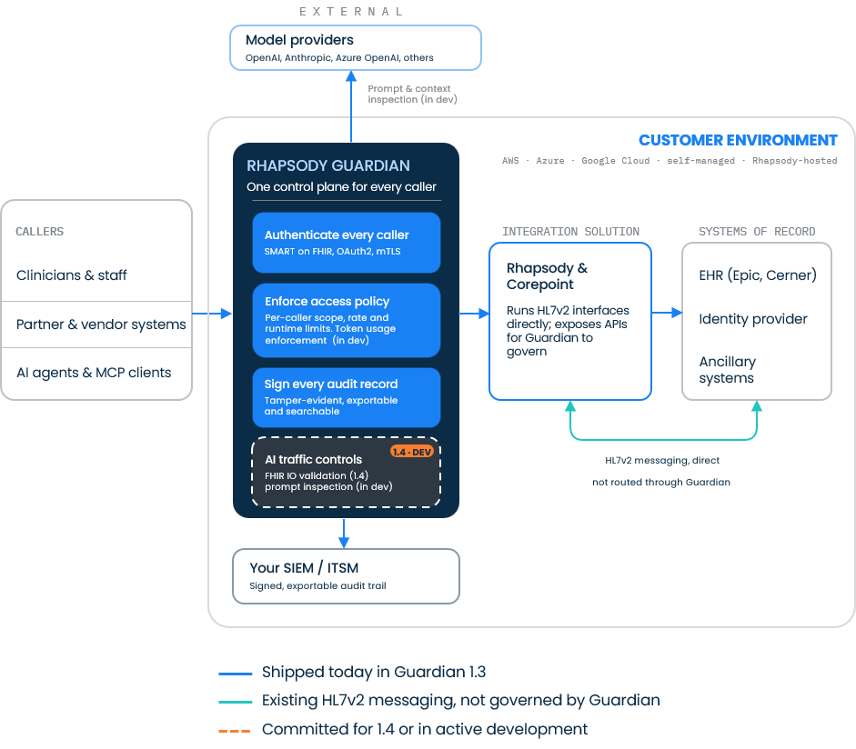

The house style for system, architecture, and framework diagrams—how the pieces fit and flow. It is calm and engineered: neutral boxes set the context, one navy node holds the system in focus, blue cards name what it does, and the connector colors carry the meaning. Structure does the explaining, so the diagram reads at a glance without a wall of labels.
Say it with hierarchy and color, not density. Context lives in quiet white boxes; the system in focus is navy with its capabilities as blue cards inside it; every connector’s color encodes its maturity or governance and is explained in a legend. Orange is held back for one job only: what’s in development.
The style was established with the Rhapsody Guardian framework below. Treat it as the reference for spacing, tiers, and the color-coded connector legend.

Rhapsody Guardian, one control plane for every caller. Neutral boxes for callers and systems of record, a navy hero node for Guardian, blue capability cards, a dashed in-development node, and blue / teal / orange connectors keyed to a legend.
Four box tiers carry the whole system. Keep each tier to its role so the hierarchy stays legible. All frames use the signature corner—squared top, rounded bottom (see Corners & shape).
Context box
White, light-gray border. Actors and adjacent systems: callers, external services, systems of record.
Neutral. Sets the scene around the system.
System node
The system in focus
Navy, white type. One per diagram—the hero.
Capability card
Nests inside the navy node; names one capability.
Rhapsody Blue, white type. Grouped inside the system.
In-development node
Dashed border, inside the system.
Dashed outline + orange status pill. Not yet shipped.
Connectors are where this style does its real work: the line’s color and style encode its status, and a legend always spells the code out. This is the Pathways principle (see Foundations) applied to maturity and governance—hold each meaning to one color across the whole diagram.
An orange pill marks anything not yet shipped, both on the node and, where useful, in the legend: 1.4 · Dev Roadmap. Mono, uppercase, used sparingly—one or two per diagram. It is the same orange as the dashed connector, so the in-development story reads consistently.
Navy for the one system in focus, blue for its capabilities, white for context, teal for ungoverned adjacent paths, and orange—dashed lines, dashed node borders, and status pills—reserved strictly for what’s in development. Keep to these plus the legend and the diagram stays on-brand and unambiguous. Generous spacing; squared-top, rounded-bottom frames throughout.